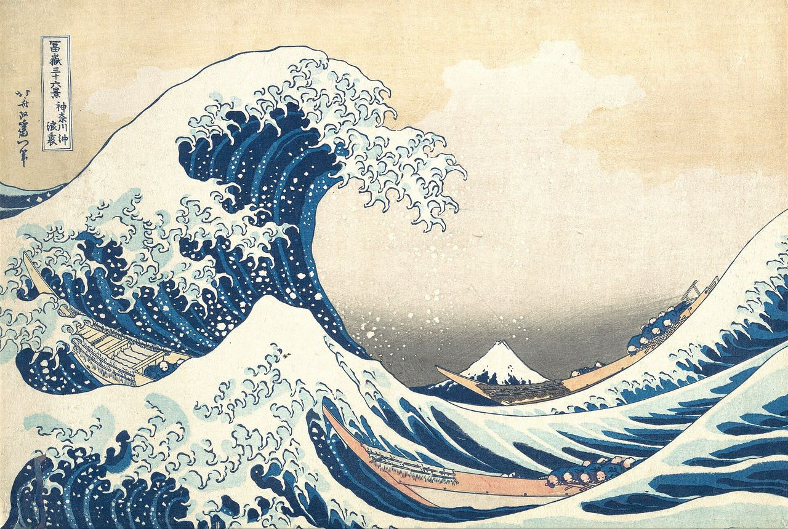
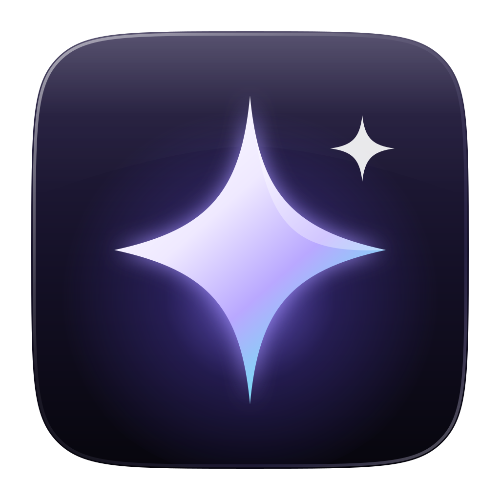
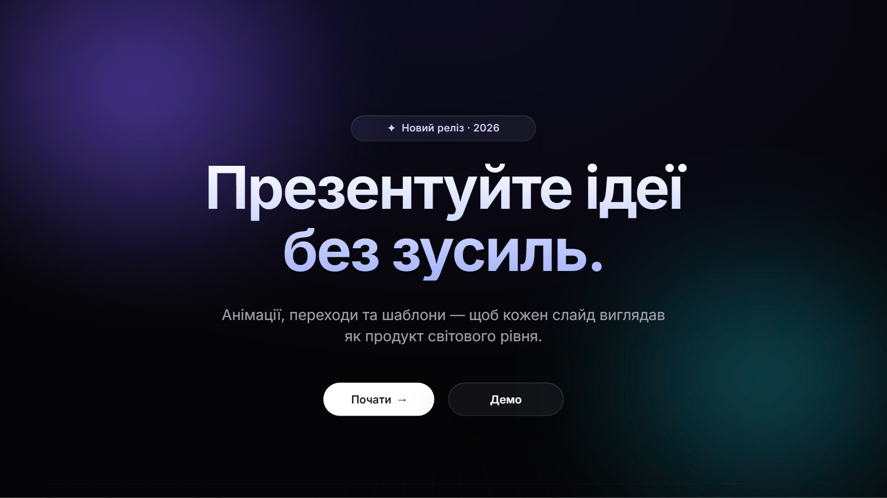

Слайди, що оживають
37 анімацій і 13 переходів: fade-up з розмиттям, по буквах, друкарська машинка, morph між слайдами.


Aurea Studio ЗавантажитиБезкоштовний редактор слайдів з анімаціями рівня сучасних сайтів: morph-переходи, лічильники, живі фони. Працює без інтернету.
шаблон «SaaS Мінімал» — скло, неонове сяйво
і плавна поява кожного елемента

Це редактор, у якому слайди рухаються так само плавно, як найкращі сайти. Знайомі інструменти професійних редакторів — у власному легкому інтерфейсі, без реєстрації й підписок.
37 анімацій і 13 переходів: fade-up з розмиттям, по буквах, друкарська машинка, morph між слайдами.

Шрифти, шаблони й бібліотека картин уже всередині. Інтернет потрібен лише для пошуку нових фото.
Відкрита ліцензія MIT. Без реклами, водяних знаків і підписок.
Від музею до бізнес-пітчу. Кожен шаблон уже анімований — просто замініть текст і фото.
Шари й групи, формат фігури, пензлик формату, пошук і заміна, нотатки доповідача та палітра команд Ctrl+K.
Однакові елементи плавно перетікають між слайдами.
Лічильники, маркер, неон, глітч, 3D-нахил і ріст діаграм.
Таймер, наступний слайд, нотатки, лазер і перо.
А також PDF і автономний HTML з усіма анімаціями.
Опишіть картинку — і вставте її на слайд. Безкоштовно, без ключа.
Кожна картка показує ефект, який можна застосувати до будь-якого тексту чи фігури.

Безкоштовно. Без реєстрації. Версія 1.2.0.
У редакторі: «Фото» → «Згенерувати зображення ШІ» (Ctrl+Shift+I). Опишіть картинку будь-якою мовою й виберіть стиль. За замовчуванням працює безкоштовний генератор без реєстрації (він додає маленький знак у кутку). Можна підключити власний безкоштовний ключ Gemini API — тоді без знака. Ключ зберігається лише на вашому комп’ютері.
Так. Aurea Studio — безкоштовна програма з відкритою ліцензією MIT.
Так, через експорт у формат .pptx. Текст, фігури, картинки, діаграми, тло й нотатки переносяться; переходи — найближчими стандартними, анімації — простим затуханням. Унікальні ефекти (morph, лічильники, shine, живі фони) не переносяться — для них є експорт в HTML, де зберігається все.
Програма ще не підписана платним сертифікатом. Натисніть «Докладніше» → «Виконати все одно».
Програма не підписана сертифікатом Apple. Перетягніть її в «Програми», потім клацніть правою кнопкою → «Відкрити» → «Відкрити». Якщо кнопки немає: «Системні параметри» → «Приватність і безпека» → «Все одно відкрити».
Розпакуйте архів і запустіть run.sh. Скрипт install.sh додасть програму в меню. На Chromebook спершу увімкніть «Середовище розробки Linux».
Це картини та фото NASA у суспільному надбанні (Wikimedia Commons). Вбудований пошук показує лише зображення з вільною ліцензією й сам додає підпис з автором.
Aurea Studio поширюється за ліцензією MIT. Сторонні компоненти: Electron (MIT), PptxGenJS (MIT), JSZip (MIT), шрифти — SIL Open Font License 1.1, зображення — суспільне надбання (Wikimedia Commons, NASA).
Усі назви сторонніх продуктів і торговельні марки належать їхнім власникам. Aurea Studio — незалежний проєкт.